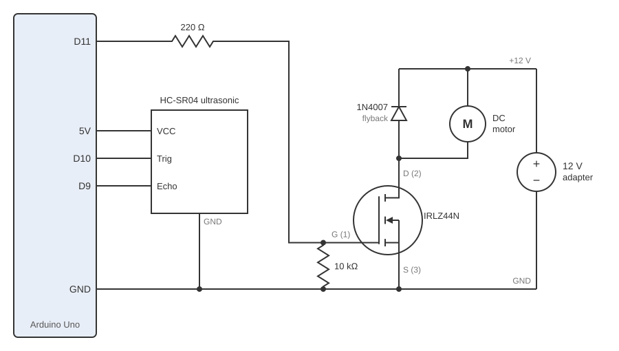
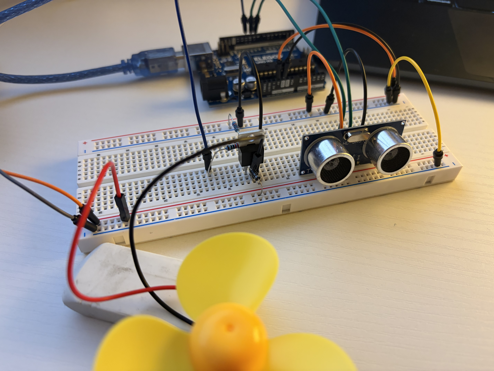
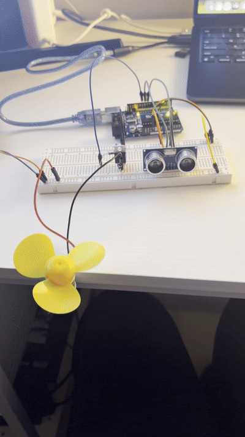
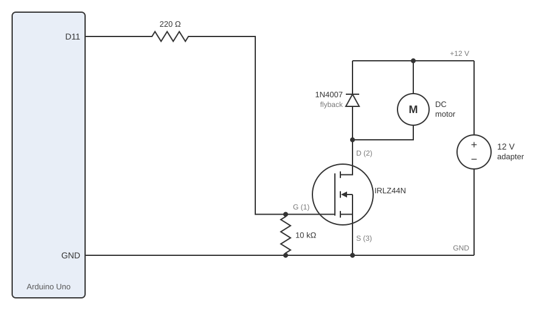
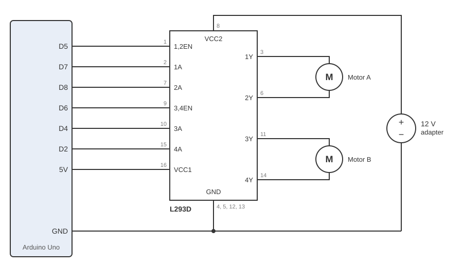

Overview
A DC fan motor spins faster the closer my hand gets to an ultrasonic sensor. The motor runs on a separate 12 V wall adapter, and an N-MOSFET lets the Arduino control it.
- The HC-SR04 sensor measures my hand's distance, read with the
NewPinglibrary. - The Arduino turns the distance into a speed and sends it to the MOSFET with
analogWrite()on pin 11. - The IRLZ44N MOSFET switches the motor's 12 V power on and off very fast. The longer it stays on in each cycle, the faster the motor spins.
The Arduino runs on USB (logic power) and the motor runs on the adapter (load power). The two circuits share only ground.
Schematic

Circuit

Calculations
Values from datasheets
| Part | Value | Source |
|---|---|---|
| DC motor | 3 to 6 V; 80 mA with no load and 1.2 A stalled, both at 6 V | I used an equivalent 3 to 6 V mini DC motor: Soldered 101171 |
| IRLZ44N MOSFET | 47 A max; turns on at 1 to 2 V; 0.025 Ω when on (5 V gate); 55 V max | Infineon IRLZ44N |
| 1N4007 diode | 1 A average, 30 A surge; 1.1 V drop at 1 A | onsemi 1N4007 |
| HC-SR04 sensor | 15 mA; 2 cm minimum range; 60 ms between readings | HC-SR04 |
| Arduino Uno pin | 40 mA absolute max; PWM on pin 11 runs at 490 Hz | ATmega328P datasheet; Arduino analogWrite() reference |
1. Keeping the motor at 6 V
analogWrite() takes a duty from 0 to 255, where 255 means
on 100% of the time. The motor responds to the average voltage,
duty / 255 × 12 V, so I solved for the duties that give the motor's
rated 3 V and 6 V.
| What | Calculation | Result |
|---|---|---|
| MAX_DUTY | 6 V / 12 V × 255 = 127.5, rounded down to 127 | 127 / 255 × 12 V = 5.98 V, never above the motor's 6 V max |
| MIN_DUTY | 3 V / 12 V × 255 = 63.75, rounded up to 64 | 64 / 255 × 12 V = 3.01 V, never below the motor's 3 V min |
2. Gate resistors
The 220 Ω protects pin 11 from the current rush when the gate charges.
The 10 kΩ holds the gate at 0 V before pinMode() runs,
so the motor can't turn on during reset.
| What | Calculation | Result |
|---|---|---|
| Current rush into the gate | 5 V / 220 Ω | 22.7 mA, under the pin's 40 mA max |
| Gate voltage when pin 11 is HIGH | 5 V × 10,000 / (220 + 10,000) | 4.89 V, above the 2 V needed to turn on |
| Steady current from pin 11 | 5 V / (220 + 10,000) Ω | 0.49 mA |
3. Motor current through the MOSFET
The motor's worst case is when it's stalled. Its resistance comes from the datasheet's stall rating, and the highest current flows during each 12 V pulse.
| What | Calculation | Result |
|---|---|---|
| Motor resistance | 6 V / 1.2 A | 5 Ω |
| Peak current (stalled, during a 12 V pulse) | 12 V / 5 Ω | 2.4 A |
| Share of the MOSFET's limit | 2.4 A / 47 A | 5% |
| Voltage across the MOSFET when on | 2.4 A × 0.025 Ω | 0.06 V |
In normal use the fan isn't stalled, so the current is between the 80 mA no-load and 1.2 A stall ratings, far below the 47 A limit.
4. Flyback diode
When the MOSFET turns off, the motor's coil keeps pushing current. The diode carries it back through the motor, so the drain voltage can't spike.
| What | Calculation | Result |
|---|---|---|
| Drain voltage at switch-off | 12 V + 1.1 V | 13.1 V, under the MOSFET's 55 V max |
| Average diode current (stalled) | 1.2 A × (1 − 127 / 255) | 0.6 A, under the 1 A rating |
Expected values at key points
| Point | Voltage | Current |
|---|---|---|
| D11 | 0 or 5 V, 490 Hz | 22.7 mA rush, 0.49 mA steady |
| MOSFET gate | 0 or 4.89 V | ≈ 0 A steady (the gate is insulated) |
| MOSFET drain | ≤ 0.06 V on, 13.1 V at switch-off | Motor current, ≤ 2.4 A peak |
| Motor (average) | 0, or 3.01 to 5.98 V | 80 mA to 1.2 A |
| HC-SR04 VCC | 5 V | 15 mA |
Firmware
// Include the NewPing library
#include <NewPing.h>
// Pin connected to the sensor's Trig pin
const int TRIG_PIN = 10;
// Pin connected to the sensor's Echo pin
const int ECHO_PIN = 9;
// PWM pin connected to the MOSFET gate through the 220 ohm resistor
const int GATE_PIN = 11;
// Closest distance used, in cm (full speed without touching the sensor's 2 cm minimum)
const int MIN_CM = 5;
// Farthest distance measured, in cm (a short hand-wave range above the sensor)
const int MAX_CM = 20;
// Lowest duty sent to the motor (3.01 V, the motor's 3 V min)
const int MIN_DUTY = 64;
// Highest duty sent to the motor (5.98 V, the motor's 6 V max)
const int MAX_DUTY = 127;
// Create the sensor object with its Trig pin, Echo pin, and max distance
NewPing sonar(TRIG_PIN, ECHO_PIN, MAX_CM);
// Run once at startup
void setup() {
// Start serial communication at 9600 baud
Serial.begin(9600);
// Set the gate pin to OUTPUT: it changes from a high-impedance input to an output driving LOW (0 V)
pinMode(GATE_PIN, OUTPUT);
// Set the gate pin's duty to 0 so the motor starts off
analogWrite(GATE_PIN, 0);
}
// Run repeatedly after setup
void loop() {
// Measure the distance in cm (0 if nothing is within MAX_CM)
int cm = sonar.ping_cm();
// Set the duty to 0 (motor off)
int duty = 0;
// Check whether something is in range
if (cm > 0) {
// Limit the distance to between MIN_CM and MAX_CM
cm = constrain(cm, MIN_CM, MAX_CM);
// Convert the distance to a duty: MIN_CM gives MAX_DUTY, MAX_CM gives MIN_DUTY
duty = map(cm, MIN_CM, MAX_CM, MAX_DUTY, MIN_DUTY);
}
// Send the duty to the MOSFET gate as a PWM signal
analogWrite(GATE_PIN, duty);
// Print a label for the distance
Serial.print("Distance (cm): ");
// Print the distance
Serial.print(cm);
// Print a label for the duty
Serial.print(" | Duty: ");
// Print the duty and start a new line
Serial.println(duty);
// Wait 60 ms before the next measurement (the HC-SR04's minimum time between readings)
delay(60);
}Circuit operation

Additional questions
1. Maximum current between pins 2 and 3 of the IRLZ44N
Pin 2 is the drain and pin 3 is the source. The datasheet's absolute maximum drain current is 47 A continuous (case at 25 °C), 33 A continuous (case at 100 °C), and 160 A in short pulses.
2. Arduino, DC motor, and flyback diode

| Component | Part | Datasheet |
|---|---|---|
| Microcontroller | Arduino Uno R3 | Arduino A000066 |
| DC motor | Soldered 101171, 3 to 6 V | Soldered mini DC motor |
| Flyback diode | 1N4007 | onsemi 1N4001 to 1N4007 |
| Transistor | IRLZ44N | Infineon IRLZ44N |
These are the same parts as my main circuit, so calculations 1 to 4 above apply.
3. Two motors with the L293D

A motor spins one way when its first input is HIGH and its second is LOW, and the other way when they are swapped. Both LOW stops it.
EN_A = 5, IN1 = 7, IN2 = 8 // motor A pins
EN_B = 6, IN3 = 4, IN4 = 2 // motor B pins
setup() {
pinMode(EN_A, IN1, IN2, EN_B, IN3, IN4, OUTPUT)
digitalWrite(EN_A, EN_B, HIGH) // turn both motors' channels on
}
loop() {
// both forward
digitalWrite(IN1, HIGH) digitalWrite(IN2, LOW)
digitalWrite(IN3, HIGH) digitalWrite(IN4, LOW)
delay(2000) // 2 seconds
// stop
digitalWrite(IN1, IN2, IN3, IN4, LOW)
delay(500) // half a second
// both back
digitalWrite(IN1, LOW) digitalWrite(IN2, HIGH)
digitalWrite(IN3, LOW) digitalWrite(IN4, HIGH)
delay(2000) // 2 seconds
// stop
digitalWrite(IN1, IN2, IN3, IN4, LOW)
delay(500) // half a second
// A forward, B back
digitalWrite(IN1, HIGH) digitalWrite(IN2, LOW)
digitalWrite(IN3, LOW) digitalWrite(IN4, HIGH)
delay(2000) // 2 seconds
// stop
digitalWrite(IN1, IN2, IN3, IN4, LOW)
delay(500) // half a second
// A back, B forward
digitalWrite(IN1, LOW) digitalWrite(IN2, HIGH)
digitalWrite(IN3, HIGH) digitalWrite(IN4, LOW)
delay(2000) // 2 seconds
// stop
digitalWrite(IN1, IN2, IN3, IN4, LOW)
delay(500) // half a second
}